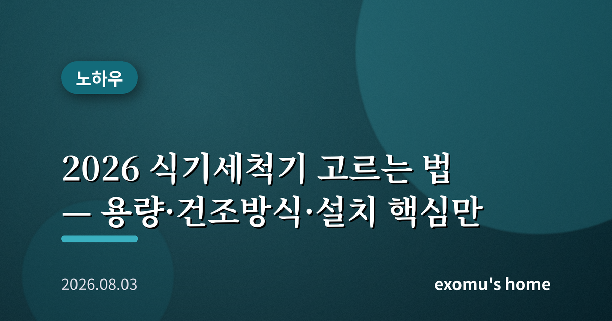
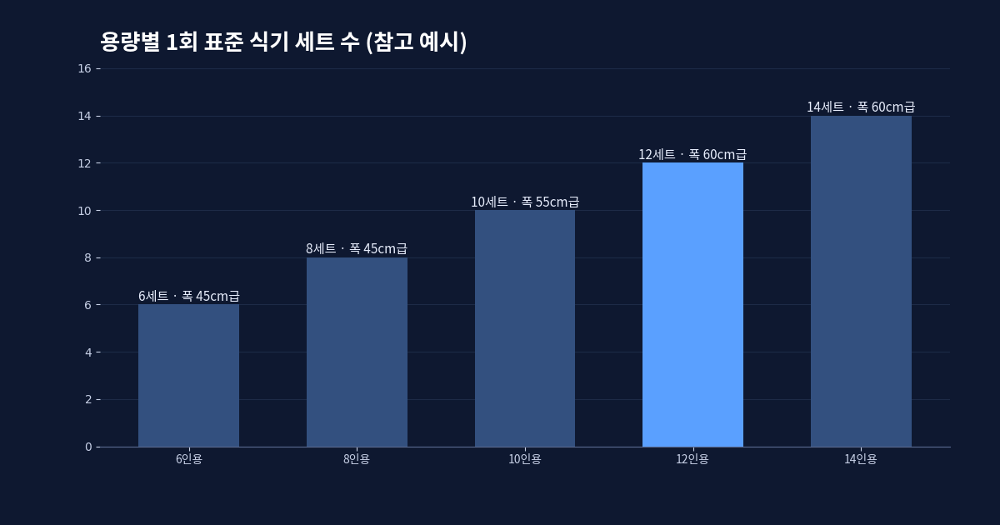
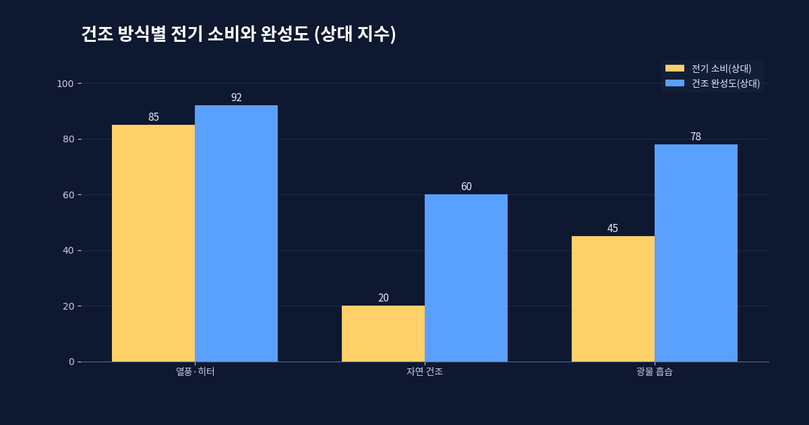
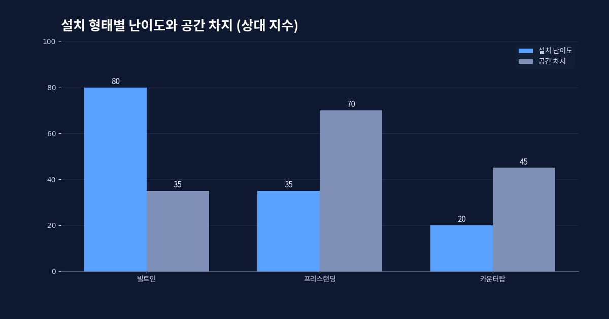
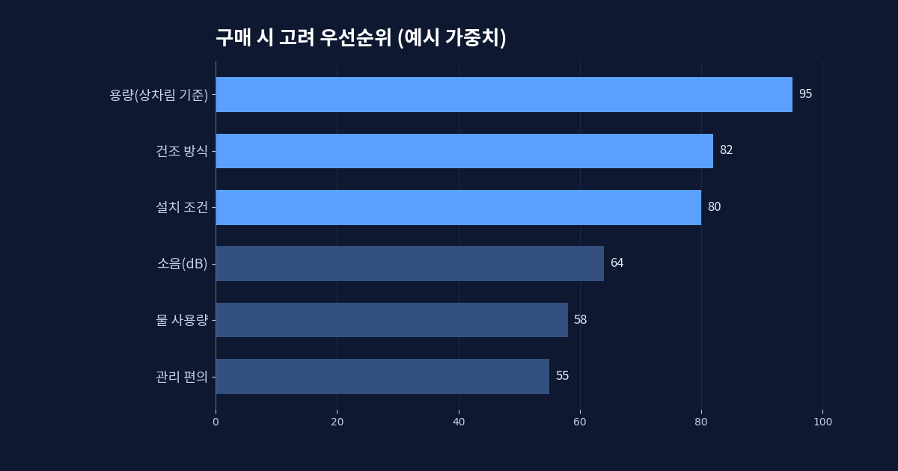

2026 식기세척기 고르는 법 — 용량·건조방식·설치 핵심만

식기세척기는 한 번 들이면 '왜 이제 샀나' 싶은 가전으로 자주 꼽힌다. 그러나 막상 고르려 하면 용량, 건조 방식, 설치 형태, 세척 방식까지 따질 것이 많아 머뭇거리게 된다. 이 글은 광고 문구에 휘둘리지 않고 내 주방과 생활에 맞는 제품을 고르도록, 판단의 기준을 순서대로 정리한다.
용량 — 인용 표기를 어떻게 읽나
식기세척기 용량은 보통 '몇 인용'으로 표기된다. 여기서 인용은 식사 인원이 아니라 한 번에 넣을 수 있는 식기 세트 수를 가리키는 국제 기준에 가깝다. 그래서 3~4인 가족이라도 한식처럼 그릇 수가 많은 상차림을 자주 한다면, 인원보다 한 단계 큰 용량이 편하다. 위 그래프처럼 용량이 커질수록 한 번에 처리하는 그릇은 늘지만, 그만큼 본체가 커지고 설치 공간도 더 필요하다.
혼자 살거나 그릇을 조금씩 자주 쓰는 경우라면 6인용 안팎의 소형이나 조리대 위에 올리는 카운터탑 형이 부담이 적다. 반대로 4인 이상 가족이거나 손님 상차림이 잦다면 12인용 이상을 고려하는 편이 결국 만족스럽다. 용량이 남는 것은 문제가 되지 않지만, 부족한 것은 매번 스트레스가 된다.

건조 방식 — 전기세와 편의의 균형
세척만큼 만족도를 가르는 것이 건조다. 건조 방식은 크게 세 갈래다. 뜨거운 열로 말리는 열풍·히터 건조, 문을 살짝 열어 잔열로 말리는 자연 건조, 그리고 광물 알갱이가 수분을 흡수했다가 방출하는 방식이다. 열풍 건조는 빠르고 뽀송하지만 전기를 더 쓴다. 자연 건조는 전기를 아끼는 대신 시간이 오래 걸리고 플라스틱 용기에는 물기가 남기 쉽다. 위 그래프는 방식별 대략적인 전기 소비와 건조 완성도의 관계를 보여 준다.
전기세가 신경 쓰인다면, 세척은 표준 코스로 하고 건조만 자연 건조로 마무리하는 절충도 가능하다. 다만 습기가 오래 남으면 위생과 냄새 문제가 생길 수 있으니, 헹굼 후 문을 자동으로 살짝 열어 주는 기능이 있는지 함께 보면 좋다.

설치 형태 — 우리 집에 들어오나
의외로 많은 사람이 놓치는 것이 설치다. 식기세척기는 크게 싱크대 아래에 붙박이로 넣는 빌트인, 독립적으로 세워 쓰는 프리스탠딩, 조리대에 올리는 카운터탑으로 나뉜다. 빌트인은 깔끔하지만 주방 가구를 손봐야 할 수 있고, 급수와 배수, 전기 연결을 위한 공사가 필요하다. 세우거나 올려 쓰는 형태는 설치가 간단한 대신 공간을 차지한다.
구매 전 반드시 설치 예정 자리의 가로·세로·깊이를 재고, 문이 열리는 방향과 앞 여유 공간까지 확인해야 한다. 급수와 배수를 어디서 끌어올지, 콘센트가 가까운지도 미리 살펴야 한다. 아무리 좋은 제품도 우리 집에 들어오지 못하면 소용이 없다.

구매 전 체크리스트
정리하면 이렇다. 첫째, 인원이 아니라 상차림 방식으로 용량을 정하되 한 단계 여유를 둔다. 둘째, 전기세와 편의 사이에서 건조 방식을 고르고 문 자동 열림 기능을 확인한다. 셋째, 설치 자리의 치수와 급배수·전기 조건을 실측한다. 넷째, 물 사용량과 소음(데시벨), 세척 코스의 다양성, 그리고 필터 청소 같은 관리 편의까지 함께 따진다.

가장 좋은 식기세척기는 사양표가 가장 화려한 제품이 아니라, 우리 집 주방에 들어와 매일 부담 없이 돌릴 수 있는 제품이다. 숫자에 압도되기보다 내 생활 방식과 공간을 먼저 떠올린다면, 한 번의 선택이 매일의 설거지에서 우리를 놓아 줄 것이다.